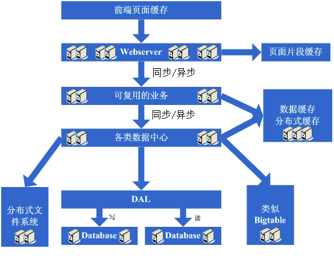

There have been some articles introducing the evolution of large website architectures, such as those about LiveJournal and eBay, which are well worth referencing. However, I feel they focused more on the results of each evolution rather than explaining in detail why such evolution was needed. In addition, recently I have noticed that many students find it hard to understand why a website needs such complex technology, which led to the idea of writing this article. This article will describe a relatively typical architectural evolution process and the body of knowledge required as an ordinary website grows into a large website, hoping to give students who want to work in the Internet industry a preliminary concept. Please also offer more suggestions on the inaccuracies in the article, so that this article can truly serve as a starting point for discussion.
Architecture Evolution Step 1: Physically separate the webserver and database
At the very beginning, due to some ideas, a website was set up on the Internet. At this time, even the host machine might have been rented. However, since this article only focuses on the evolution of the architecture, let us assume that a host machine has already been hosted and there is a certain amount of bandwidth. At this point, because the website has certain characteristics, it attracts some visitors. Gradually, you find that the system pressure is getting higher and higher, and the response speed is getting slower and slower. What is more obvious at this time is that the database and the application affect each other. When the application has problems, the database is also prone to problems, and when the database has problems, the application is also prone to problems. So it enters the first stage of evolution: physically separate the application and the database into two machines. At this time, there are no new technical requirements, but you find that it is indeed effective. The system returns to its previous response speed, supports higher traffic, and no longer suffers from mutual influence between the database and the application.
Take a look at the system diagram after completing this step:

This step involves the following knowledge systems:
This architecture evolution step basically has no requirements on the technical knowledge system.
Architecture Evolution Step 2: Add page cache
Good times don't last long. As more and more people visit, you find that the response speed starts to slow down again. After investigating the cause, you find that there are too many operations accessing the database, causing fierce competition for database connections, so the response slows down. However, the number of database connections cannot be set too high; otherwise, the database machine will be under high pressure. Therefore, you consider using a caching mechanism to reduce competition for database connection resources and the read pressure on the database. At this time, you might first choose to use mechanisms like squid to cache relatively static pages in the system (for example, pages that are updated only every day or two). Of course, you could also use a solution to staticize the pages. In this way, without modifying the program, it can effectively reduce the pressure on the webserver and reduce competition for database connection resources. OK, so you start using squid to cache relatively static pages.
Take a look at the system diagram after completing this step:

This step involves the following knowledge systems:
Front-end page caching technologies, such as squid. To use it well, you also need to deeply understand squid's implementation and cache invalidation algorithms.
Architecture Evolution Step 3: Add page fragment caching
After adding squid for caching, the overall system speed indeed improved, and the pressure on the webserver also began to drop. However, as the number of visits increased, the system began to slow down again. Having tasted the benefits of dynamic caching like squid, you started to wonder whether the relatively static parts of those dynamic pages could also be cached. Therefore, you considered adopting a page fragment caching strategy similar to ESI. OK, so you started using ESI to cache the relatively static fragment parts of dynamic pages.
Take a look at the system diagram after completing this step:

This step involves the following knowledge systems:
Page fragment caching technologies, such as ESI. To use them well, you also need to master ESI's implementation, etc.
Architecture Evolution Step 4: Data cache
After using technologies like ESI to further improve the system's caching effectiveness, the pressure on the system did decrease further. But again, as the number of visits increased, the system began to slow down. Upon investigation, you might find that there are some places in the system that repeatedly fetch data information, such as obtaining user information. At this point, you start to consider whether this data information can also be cached. So you cache this data in local memory. After the changes are completed, it fully meets expectations: the system's response speed recovers, and the pressure on the database is reduced significantly again.
Take a look at the system diagram after completing this step:

This step involves the following knowledge systems:
Caching technologies, including data structures like Map, cache algorithms, the implementation mechanisms of the chosen framework itself, etc.
Architecture Evolution Step 5: Add webserver
Good times don't last long. You find that as the system's visit volume increases again, the pressure on the webserver machine rises to a relatively high level during peak hours. At this point, you begin to consider adding a webserver. This is also to solve the availability problem at the same time, to avoid the situation where the system becomes unusable if a single webserver goes down. After considering these issues, you decide to add a webserver. When adding a webserver, you will encounter some problems, typically:
1. How to distribute visits to these two machines. At this time, the commonly considered solutions are Apache's built-in load balancing solution, or software load balancing solutions like LVS.
2. How to keep state information synchronized, such as user sessions. At this time, solutions to consider include writing to a database, writing to storage, cookies, or mechanisms for synchronizing session information.
3. How to keep data cache information synchronized, such as the previously cached user data. At this time, mechanisms commonly considered include cache synchronization or distributed caching.
4. How to keep functions like file uploads working normally. At this time, the commonly considered mechanism is to use a shared file system or storage.
After solving these problems, the webserver was finally increased to two machines, and the system finally returned to its previous speed.
Take a look at the system diagram after completing this step:

This step involves the following knowledge systems:
Load balancing technologies (including but not limited to hardware load balancing, software load balancing, load balancing algorithms, Linux forwarding protocols, implementation details of the chosen technologies, etc.), active-standby technologies (including but not limited to ARP spoofing, Linux heartbeat, etc.), state information or cache synchronization technologies (including but not limited to Cookie technology, UDP protocol, state information broadcasting, implementation details of the chosen cache synchronization technology, etc.), shared file technologies (including but not limited to NFS, etc.), storage technologies (including but not limited to storage devices, etc.).
Architecture Evolution Step 6: Database sharding
After enjoying a period of happiness with rapid growth in system traffic, you find that the system is slowing down again. What is the situation this time? Upon investigation, you find that for operations such as database writes and updates, the competition for some database connection resources is very fierce, causing the system to slow down. What to do now? The available options at this time include database clustering and the database sharding strategy. In terms of clustering, some databases are not well supported, so database sharding becomes a more common strategy. Database sharding also means that the original programs need to be modified. After a round of modifications to implement sharding, it turns out well: the goal is achieved, and the system recovers, or even becomes faster than before.
Take a look at the system diagram after completing this step:

This step involves the following knowledge systems:
This step mainly requires a reasonable business-level division to achieve database sharding; there are no other requirements on specific technical details.
But at the same time, as the data volume increases and database sharding proceeds, the design, tuning, and maintenance of the database need to be done better. Therefore, high requirements are still placed on the technologies in these areas.
Architecture Evolution Step 7: Table sharding, DAL, and distributed cache
As the system continues to run, the data volume begins to grow substantially. At this point, you find that queries are still somewhat slow after database sharding, so you start working on table sharding following the same idea as database sharding. Of course, this inevitably requires some modifications to the programs. Perhaps at this time you realize that having the application itself care about the rules for database and table sharding is somewhat complicated. This gives rise to the idea of adding a generic framework to implement data access for database and table sharding; in eBay's architecture, this corresponds to DAL. This evolution process takes a relatively long time. Of course, it is also possible that this generic framework will not be started until after the table sharding is completed. Meanwhile, at this stage, you might find that the previous cache synchronization solution has problems, because the data volume is too large, making it no longer possible to store caches locally and then synchronize them. You need to adopt a distributed cache solution. So, after another round of investigation and struggle, you finally move a large amount of data cache to distributed caching.
Take a look at the system diagram after completing this step:

This step involves the following knowledge systems:
Table sharding is also more about business-level division; technically, it involves dynamic hash algorithms, consistent hash algorithms, etc.
DAL involves many complex technologies, such as database connection management (timeouts, exceptions), database operation control (timeouts, exceptions), encapsulation of database and table sharding rules, etc.
Architecture Evolution Step 8: Add more webservers
After completing the work of database and table sharding, the pressure on the database has dropped to a relatively low level, and you start living a happy life again, watching the number of visits surge every day. Then one day, you suddenly find that the system's access is beginning to slow down again. At this time, you first check the database, and the pressure is completely normal. Then you check the webserver and find that Apache is blocking many requests, while the application server is still relatively fast for each request. It seems that the number of requests is too high, causing queuing and slower response times. This is easier to handle. Generally speaking, at this point you also have some money, so you add some webserver servers. During the process of adding webserver servers, several challenges may arise:
1. When Apache software load balancing or LVS software load balancing can no longer handle the scheduling of huge web access volumes (request connections, network traffic, etc.), at this point if the budget allows, the approach taken is to purchase hardware load balancers, such as F5, Netsclar, Athelon, etc. If the budget does not allow, the approach taken is to logically classify applications to a certain extent and then distribute them across different software load balancing clusters.
2. Some existing solutions such as state information synchronization and file sharing may become bottlenecks and need improvement. Perhaps at this point, distributed file systems that meet the website's business needs will be developed as appropriate.
After completing these tasks, we enter an era of seemingly perfect infinite scalability. When website traffic increases, the solution is to continually add web servers.
Take a look at the system diagram after this step is completed:

This step involves the following knowledge systems:
At this step, with the continuous growth in the number of machines, the continuous growth in data volume, and increasingly higher requirements for system availability, a deeper understanding of the technologies being adopted is required, and more customized products need to be developed based on the website's needs.
Architecture Evolution Step 9: Data read-write separation and low-cost storage solutions
Suddenly one day, we find that this perfect era is also coming to an end. The database nightmare appears before our eyes again. Because too many web servers have been added, database connection resources are still insufficient, and at this point the database has already been partitioned into multiple databases and tables. Upon analyzing the database pressure situation, it may be discovered that the database read-write ratio is very high. At this time, the solution of data read-write separation usually comes to mind. Of course, this solution is not easy to implement. In addition, it may be discovered that storing some data in the database is somewhat wasteful, or takes up too much database resources. Therefore, the architecture evolution that may take shape at this stage is to implement data read-write separation, while also developing some lower-cost storage solutions, such as BigTable.
Take a look at the system diagram after this step is completed:

This step involves the following knowledge systems:
Data read-write separation requires a deep mastery and understanding of database replication, standby, and other strategies, and also requires the ability to implement them independently.
Low-cost storage solutions require a deep mastery and understanding of OS file storage, and also require a deep mastery of how the adopted language implements file handling.
Architecture Evolution Step 10: Entering the era of large-scale distributed applications and the dream era of low-cost server clusters
After this long and painful process, the perfect era finally arrives once again. Continuously adding web servers can support increasingly higher traffic. For large websites, the importance of popularity is beyond doubt. As popularity grows, various functional requirements also begin to grow explosively. At this point, it is suddenly discovered that the web application originally deployed on web servers has become very huge. When multiple teams begin to modify it, it is quite inconvenient, and reusability is quite poor. Basically, every team does more or less repetitive work, and deployment and maintenance are also quite troublesome, because copying and starting the huge application package on N machines consumes a considerable amount of time, and problems are not easy to troubleshoot when they occur. Another worse situation is that a bug in one application may cause the entire site to become unavailable. There are also other factors such as difficulty in tuning (because the applications deployed on the machines have to do everything, making targeted tuning simply impossible). Based on this analysis, a firm decision is made to split the system by responsibility, and thus a large-scale distributed application is born. Usually, this step takes a considerable amount of time because it encounters many challenges:
1. After splitting into a distributed architecture, a high-performance, stable communication framework needs to be provided, and it must support multiple different communication and remote invocation methods.
2. Splitting a huge application takes a long time, requiring business organization and control of system dependencies, etc.
3. How to properly operate and maintain (dependency management, health status management, error tracking, tuning, monitoring and alerting, etc.) this huge distributed application.
After this step, the system architecture enters a relatively stable stage. At the same time, it becomes possible to use a large number of low-cost machines to support the huge traffic and data volume. Combining this architecture with the experience gained from these many evolution processes, various other methods are adopted to support increasingly higher traffic.
Take a look at the system diagram after this step is completed:

This step involves the following knowledge systems:
This step involves a great many knowledge systems. It requires deep understanding and mastery of communication, remote invocation, messaging mechanisms, etc. It requires a clear understanding from theory, hardware level, operating system level, as well as the implementation of the adopted language.
Operations and maintenance also involve a great many knowledge systems. In most cases, it is necessary to master distributed parallel computing, reporting, monitoring technologies, rule strategies, and so on.
It is indeed not very laborious to talk about. The classic evolution process of the entire website architecture is quite similar to what is described above. Of course, the solutions adopted at each step and the evolution steps may differ. In addition, due to different website businesses, there will be different professional technology needs. This blog explains the evolution process more from an architectural perspective. Of course, many technologies are not mentioned here, such as database clustering, data mining, search, etc. But in the real evolution process, things like upgrading hardware configurations, network environments, transforming operating systems, CDN mirroring, etc., are also used to support greater traffic. Therefore, there will be many differences in the real development process. Moreover, a large website needs to achieve far more than what is listed above, including security, operations, business operations, services, storage, etc. It is really not easy to build a large website well. This article is written more in hopes of eliciting more introductions to the architecture evolution of large websites.
Original post URL: http://www.blogjava.net/BlueDavy/archive/2008/09/03/226749.html
Click me to share notes
<p style="font-size:14px;">The note must be an extension of the content of this article!</p><br> <p style="font-size:12px;"><a href="../tougao.html" target="_blank">Article submission, click here</a></p> <p style="font-size:14px;"><a href="./runoob-user-test-intro.html" target="_blank">How to obtain a registration invitation code</a></p> <h3 class="text-muted"><i class="fa fa-info-circle" aria-hidden="true"></i> You must <a href=".." class="runoob-pop">log in</a> before sharing notes!</h3> <p><a href="./runoob-user-test-intro.html" target="_blank">How to obtain a registration invitation code</a></p>